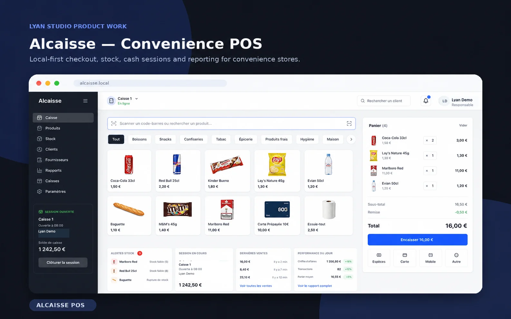

Fast checkout
Quick product selection and basket handling for the register.
Alcaisse
A retail checkout and stock workflow exploring product lookup, cart handling, payments, cash sessions, inventory alerts and daily reporting.
Product exploration · Local-first checkout workflow with an interactive browser demo.

Core flows
Quick product selection and basket handling for the register.
Clear totals, quantities and payment method selection.
Open sessions, track register state and support end-of-day routines.
Find products by category, name or barcode-led workflows.
Surface low-stock items and reorder attention points.
Review sales, transactions and recent checkout activity.
Why it exists
Alcaisse explores the interface and logic behind small retail operations: checkout, products, stock, sessions and reporting. The local-first direction uses Electron, React, TypeScript and SQLite.
Deployment note
The browser demo uses sample products and runs in memory. It does not process payments or persist sales.
Try it
Open the static demo or discuss a Retail Ops Dashboard around products, stock, margin visibility and POS workflows.